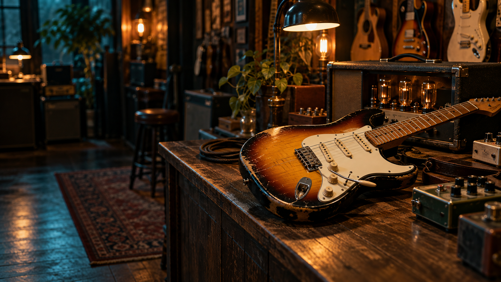
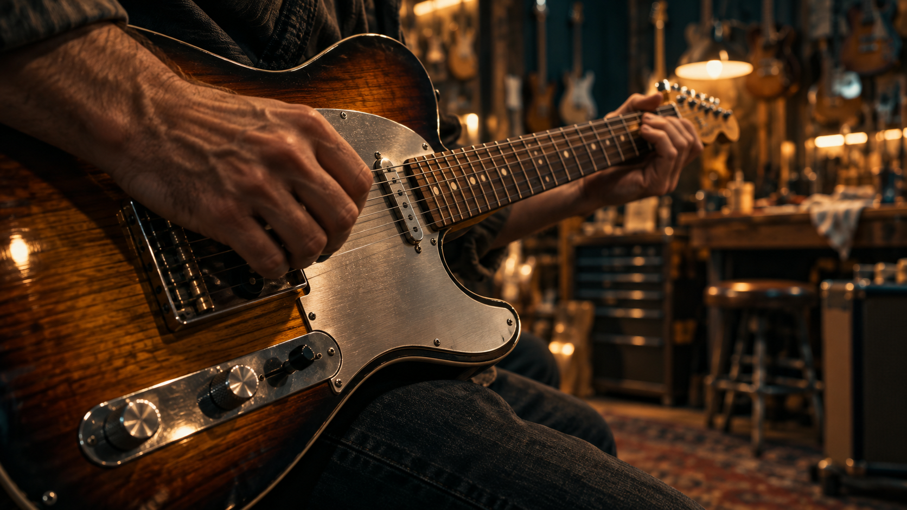
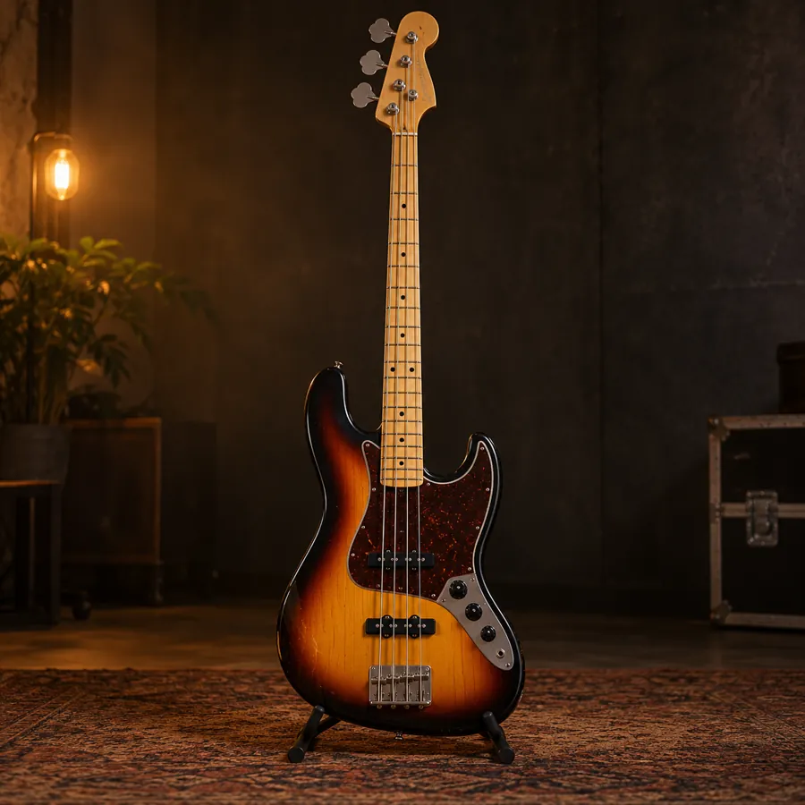
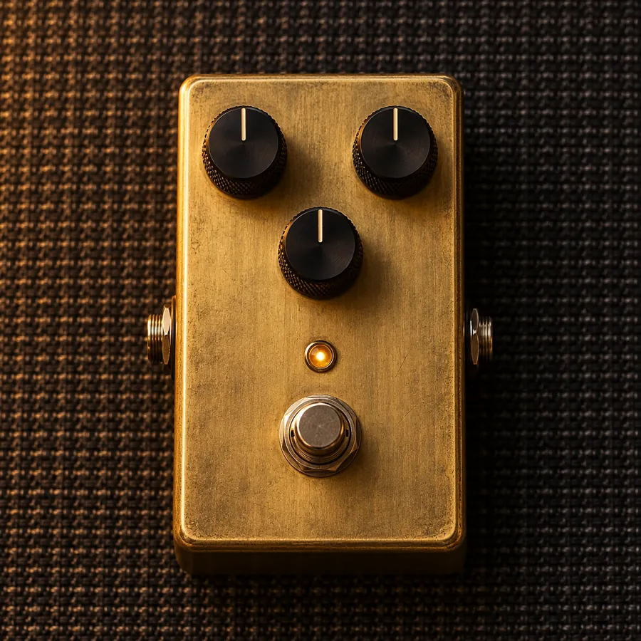
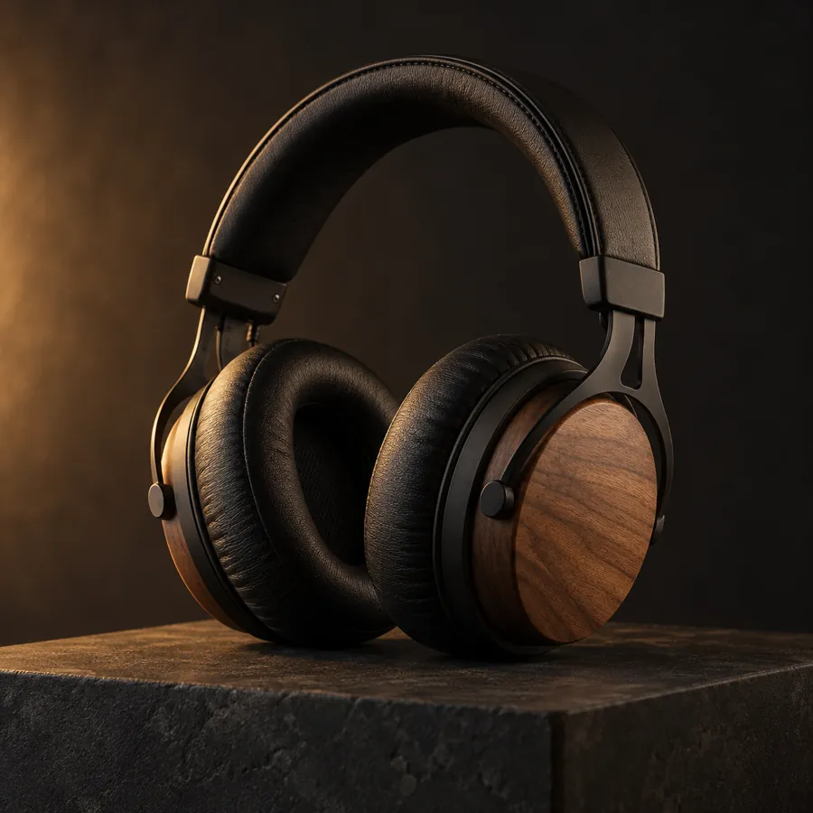

01 / CORDAMadeira quente. Ataque brilhante.
Uma loja para quem escuta de perto
Instrumentos, amplificadores e pequenas descobertas para fazer a sua próxima música acontecer.
Encontre seu som ↗Veja o vídeo acompanhar o scroll ↘A gente acredita que um instrumento certo muda a forma como uma ideia soa — e como ela faz você se sentir.
SELEÇÃO DE ESTÚDIO · PEÇAS CONCEITO
Uma seleção de instrumentos
para começar a explorar.

01 / CORDAMadeira quente. Ataque brilhante.
 02 / AMPLIFICAÇÃO
02 / AMPLIFICAÇÃOAquele grão que não pede licença.

03 / TECLASTextura para ideias que chegam tarde.

04 / CORDAGrave redondo para sustentar a sala.

05 / EFEITOSaturação macia. Um giro de cada vez.

06 / ESTÚDIODetalhe por detalhe, sem perder o todo.
* Produtos e valores fictícios para esta demonstração. Os botões simulam a sacola; nenhuma compra é feita.
FEITO DE ESCUTA
Cada instrumento passa por mãos que conhecem a diferença entre um bom som e aquele som que faz a gente parar tudo.
Venha experimentar ↗03 — 04 / O ATELIERUMA ÚLTIMA COISA
“Tem coisas que você só entende quando ouve ao vivo.”Explore a vitrine ↗
ESTUDO DE EXPERIÊNCIA · CONCEITO DEMONSTRATIVO
Apresentar uma loja de instrumentos com a atmosfera de uma sessão de ensaio, sem perder clareza de navegação.
Um filme de fundo contínuo acompanha a vitrine; no segundo modo, a rolagem percorre o próprio take e avança a narrativa.
Direção visual, conteúdo de marca, vitrine responsiva e duas formas de usar vídeo numa experiência web.
Lume é uma marca conceito criada para esta demonstração. Produtos, preços e sacola são ilustrativos; nenhum pedido é processado.
Conheça a ServAgency ↗